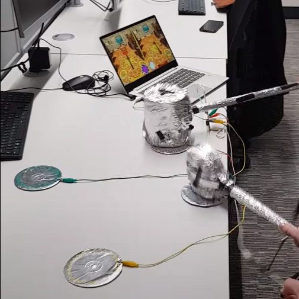
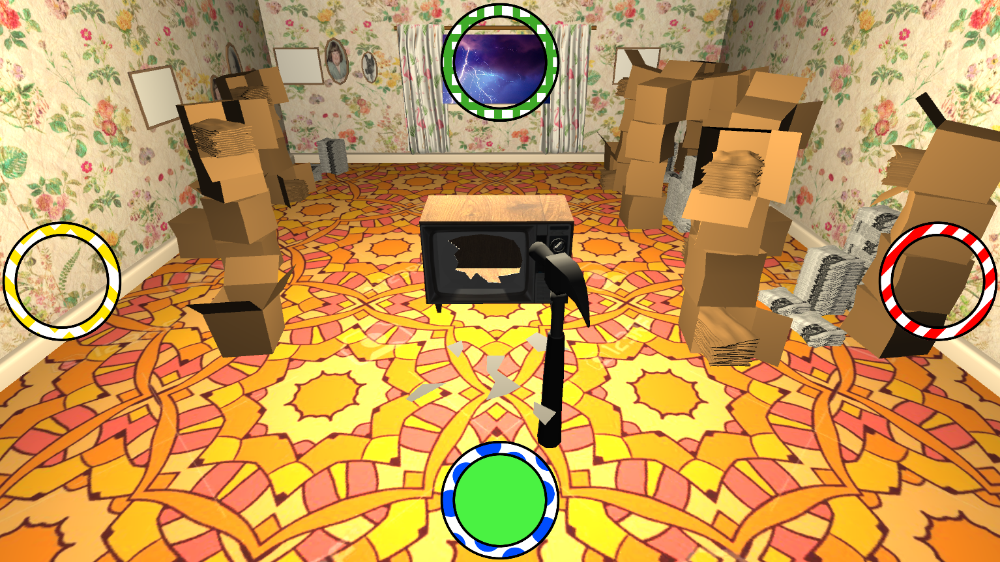
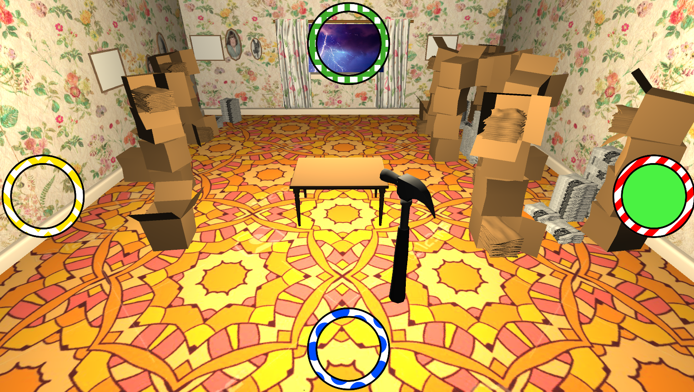

Global Game Jam 2020
Overview
I partook in the 2019 Global game jam where the theme was repair. My team decided to create a game using an alternative custom controller which was a DIY hammer that you hit buttons with. The game reloved around you using the hammer to smash the corresponding highlighted button to fix the items appearing on screen. The game had a singleplayer and versus mode where you would compete with another player to fix the same set of items as fast as possible.
I worked on handling the controller input, the main game mechanics of spawning and repairing the items, the versus multiplayer mode and singleplayer mode and screen effects (such as camera shake).


Check out the game here!